Profil Perusahaan
Profil Perusahaan
PT. GGCLink Prima Nusantara atau yang sudah berganti nama sejak 1 November 2024 menjadi PT. GGCLink RetaiL Solusindo, yang berada di JL SWADAYA NO 1 KP CIKEMPONG RT05 RW05 PAKANSARI CIBINONG KAB BOGOR JAWA BARAT Kode Pos 16915 PT ini bergerak di layanan terintegrasi penyedia sumber daya serta pengelolaan yang berfokus pada bidang IT (informasi dan teknologi). PT. GGCLink Retail Solusindo tidak hanya menyediakan layanan internet tetapi, terdapat berbagai aksesoris serta peralatan berbasis fiber optic.
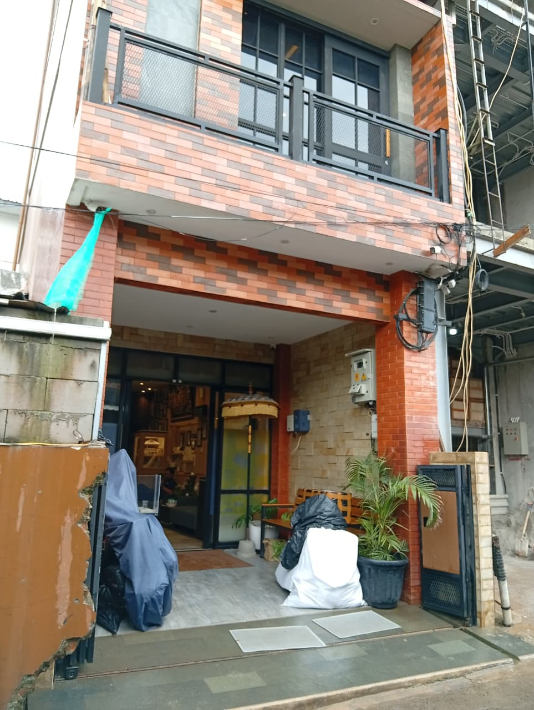

 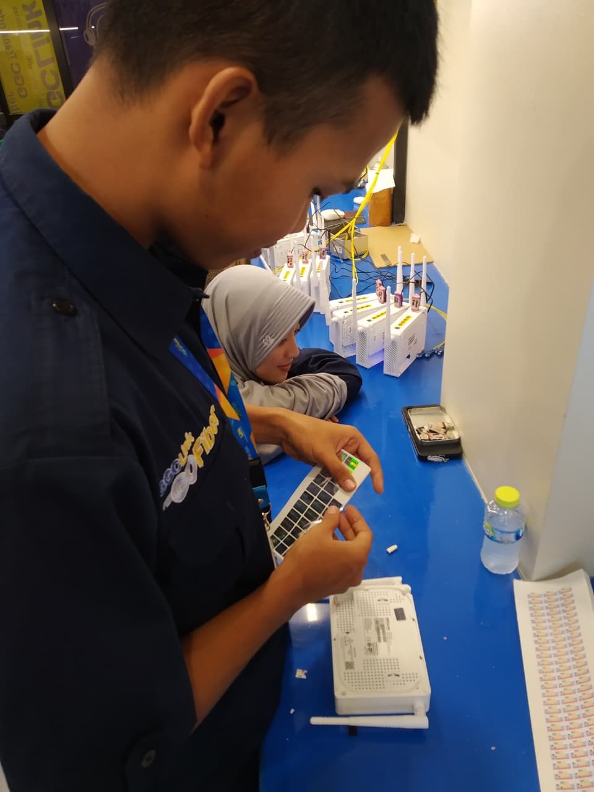
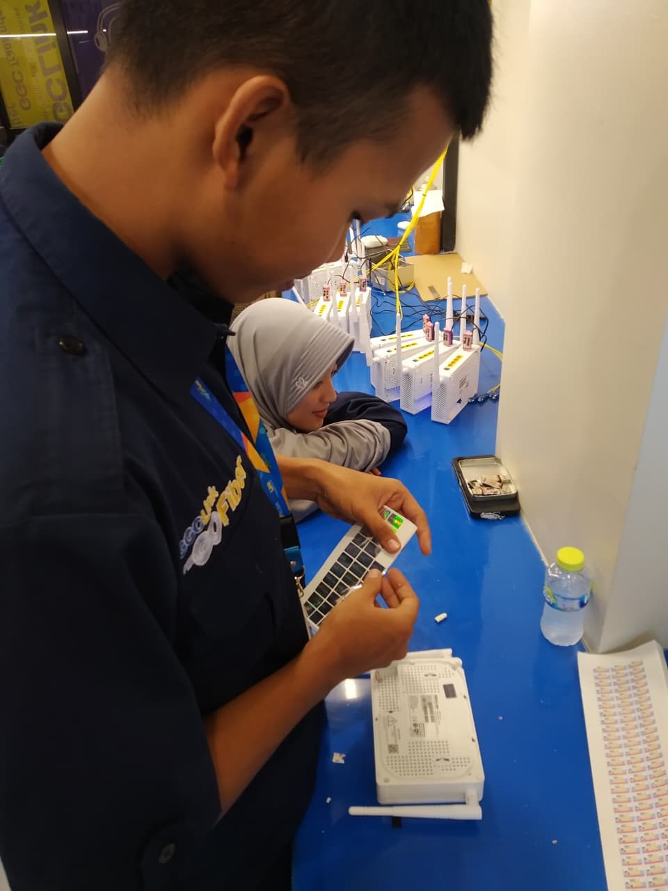
 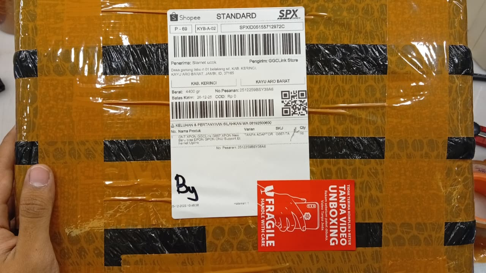
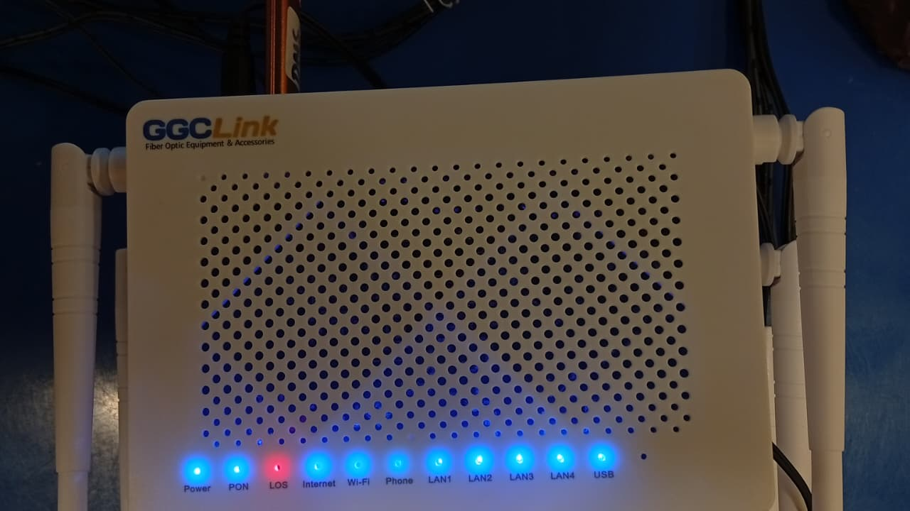
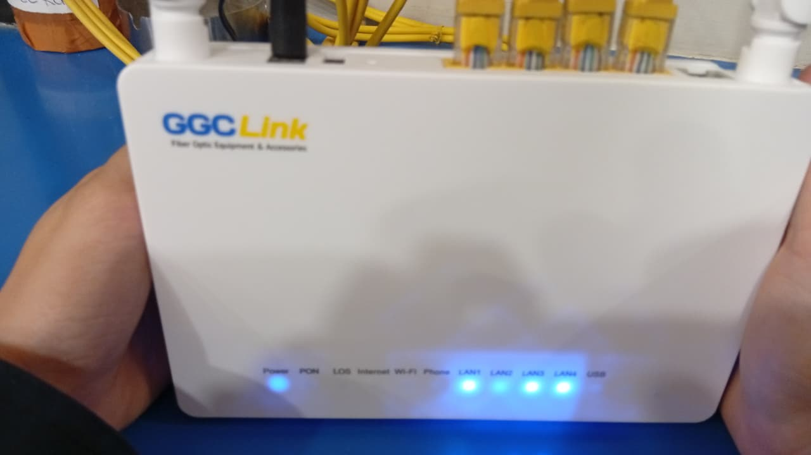
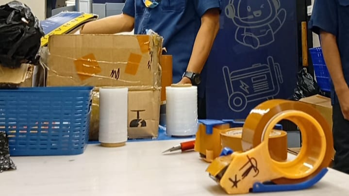
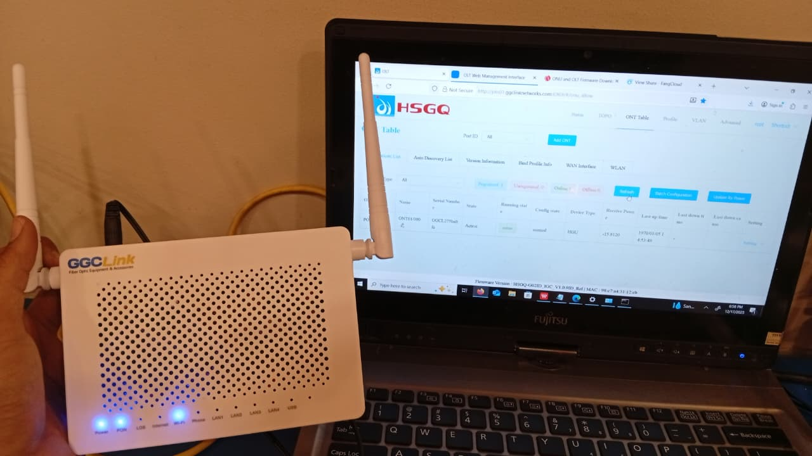
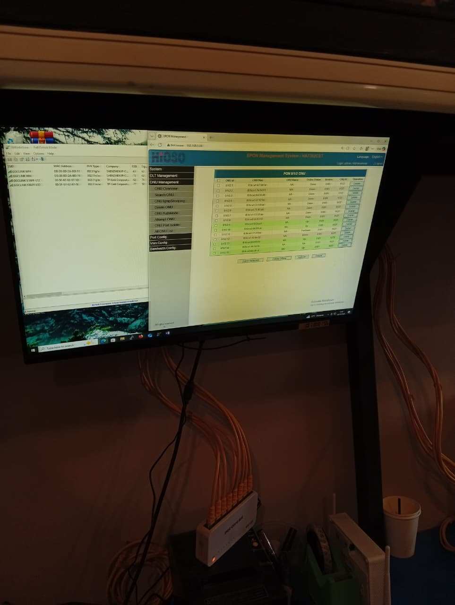
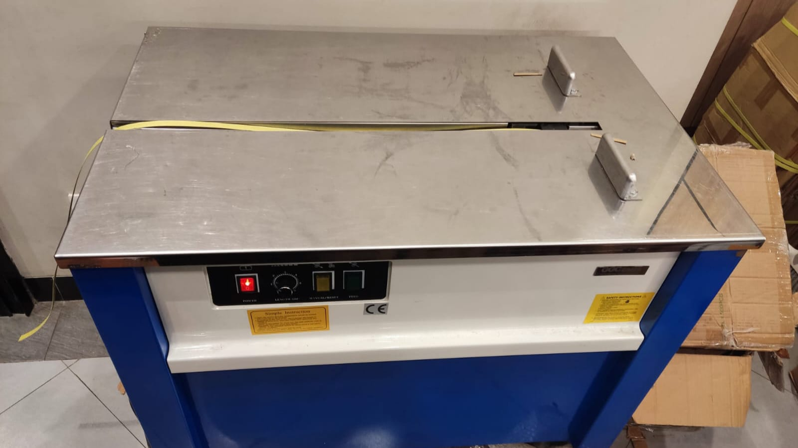
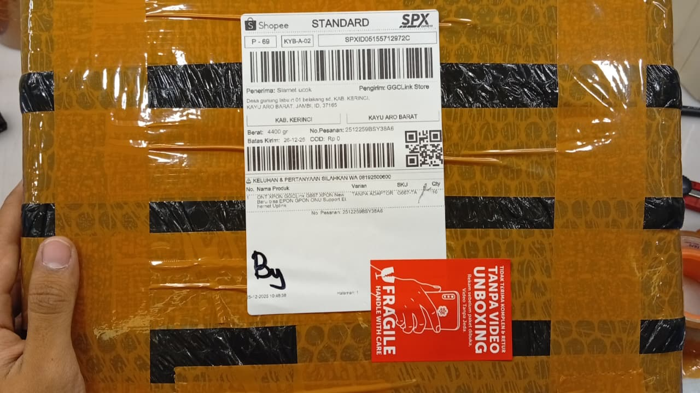
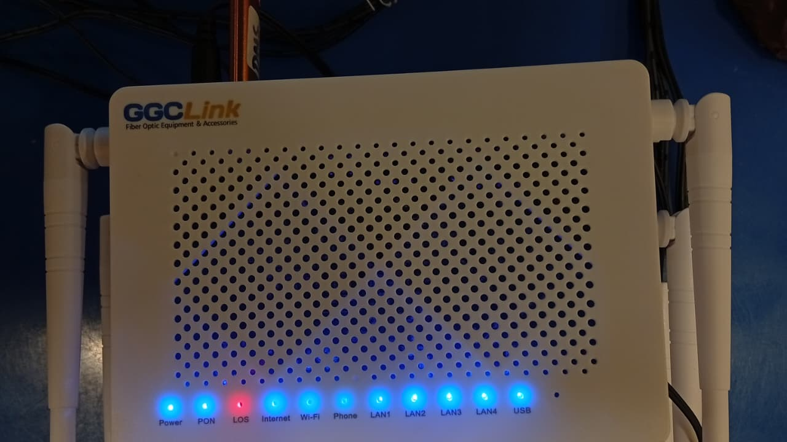
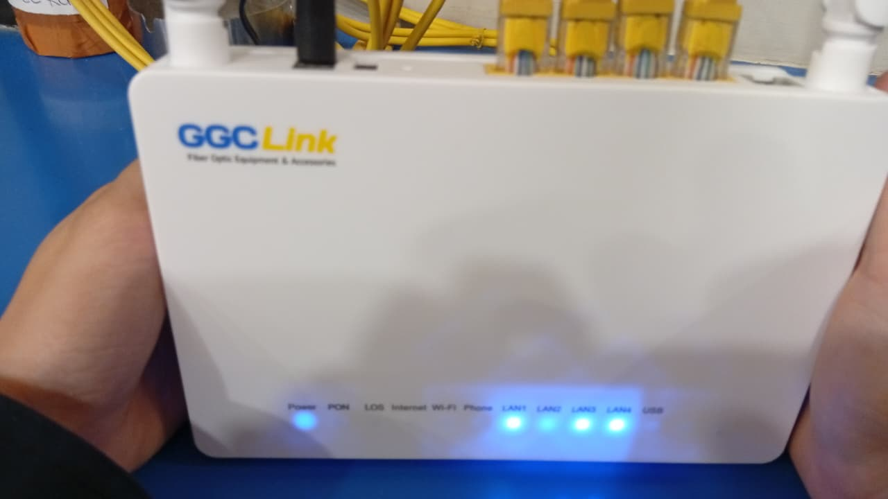
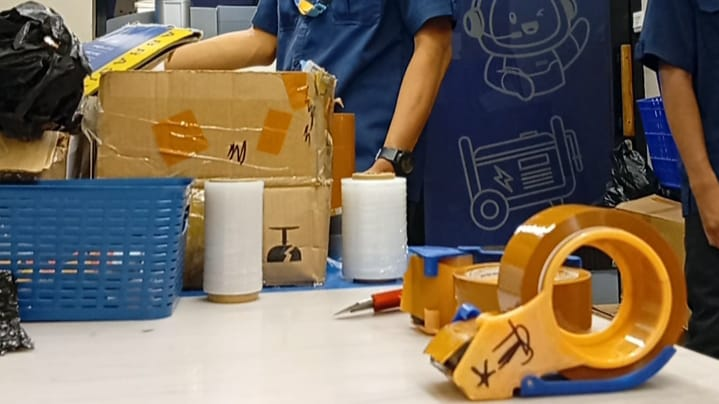
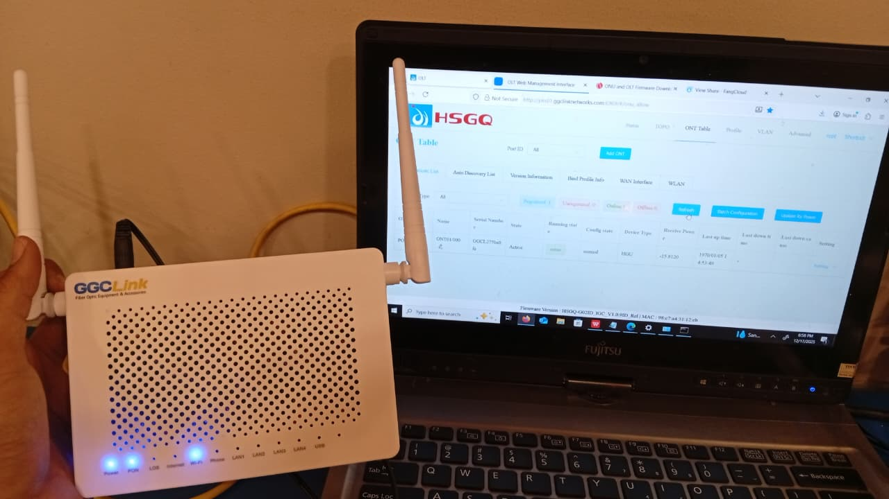
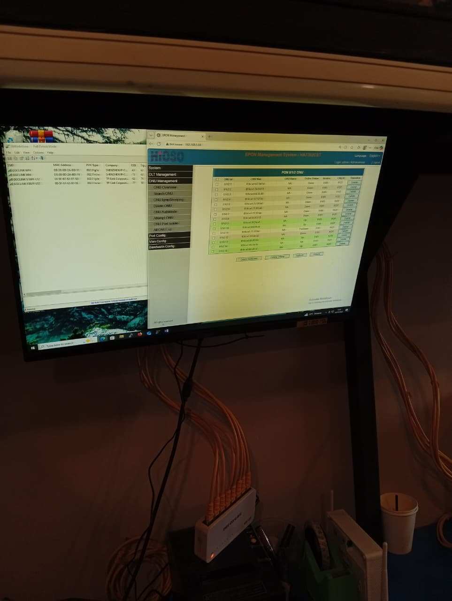
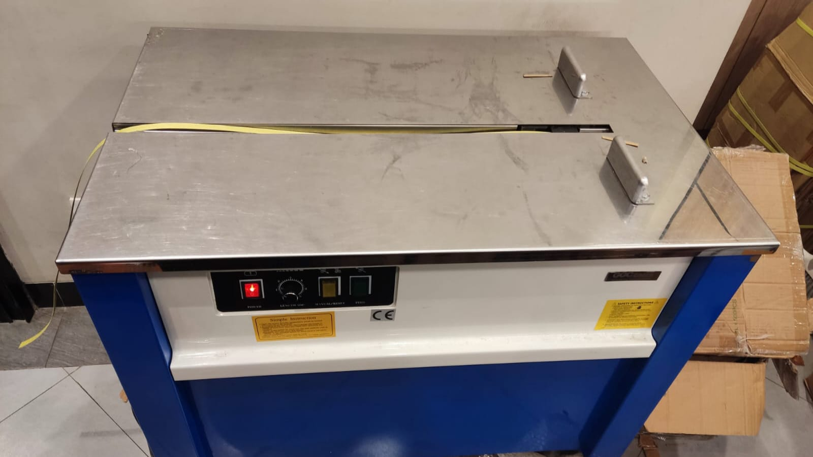